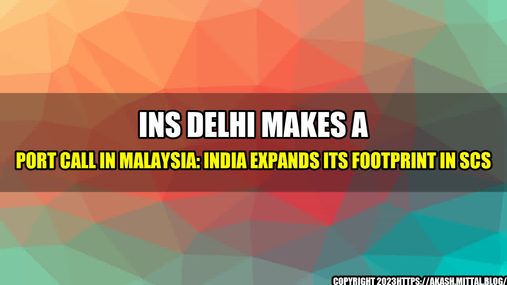

India's Expanding Footprint In The South China Sea: INS Delhi Makes A Port Call In Malaysia

It was a sunny morning in Kuala Lumpur when INS Delhi, the Delhi-class destroyer of the Indian Navy, made a port call in the Malaysian capital. The ship was on a good-will tour of South East Asia, aimed at strengthening India's ties with its neighbours. As INS Delhi docked at the port with its majestic flag flying high, the Indian and Malaysian naval personnel exchanged salutes and formal greetings, marking the beginning of a new chapter in the bilateral relations of the two countries.
The South China Sea (SCS) has been a hotbed of geopolitical tensions in recent years, with China asserting its territorial claims over much of the region, and the US and its allies challenging those claims. India, too, has been a stakeholder in the SCS, as it imports much of its energy supplies from the region, and has strategic interests in maintaining freedom of navigation and overflight rights in the area. In this context, India's expanding footprint in the SCS assumes significance, not only from a diplomatic and strategic perspective, but also from an economic and cultural standpoint.
Here are some quantifiable examples of India's increasing engagement in the SCS:
- India's trade with the ASEAN (Association of South East Asian Nations) countries, many of which are located in the SCS region, has grown significantly in recent years. In 2020-21, India's total trade with ASEAN stood at $85 billion, with a target of $100 billion by 2025.
- India has been investing in infrastructure projects in the SCS region, such as the Kaladan multimodal transport project in Myanmar, which seeks to improve connectivity between India's northeastern states and the Bay of Bengal.
- India has been deepening its cultural ties with the SCS region, through initiatives such as the ASEAN-India Film Festival, the ASEAN-India Writers Festival, and the ASEAN-India Music Festival. These events showcase India's rich and diverse cultural heritage to the people of the SCS region, and promote understanding and friendship between the two sides.
India's strategic engagement in the SCS has also been on the rise, with the Indian Navy playing a prominent role in the region. Apart from goodwill visits such as the one made by INS Delhi to Malaysia, the Indian Navy has been conducting joint exercises with the navies of countries such as Singapore, Indonesia, Vietnam, and the Philippines, among others. India has also been providing assistance to the countries in the region in building their maritime capabilities, through the provision of patrol vessels, communication equipment, and training programmes. India's active presence in the SCS sends out a strong message of deterrence to the countries that seek to challenge the regional order, while also promoting stability and cooperation in the region.
What can India do to further enhance its presence in the SCS, and to promote its interests in the region? Here are three points:
- India needs to deepen its economic engagement with the SCS region, by identifying areas of mutual benefit and investing in them. This could include sectors such as renewable energy, digital technologies, and sustainable tourism.
- India needs to step up its strategic engagement with the SCS, by enhancing its maritime security partnerships with the countries in the region. This could involve joint patrols, intelligence-sharing, and capacity-building assistance, among others.
- India needs to promote greater people-to-people contact between the two sides, by encouraging more cultural exchanges and tourism. This could help to build bridges of friendship and understanding, and to counterbalance the negative propaganda that often spreads through social media and other channels.
In conclusion, India's expanded footprint in the SCS presents both opportunities and challenges, as it seeks to promote its strategic, economic, and cultural interests in the region. By adopting a multi-pronged approach that combines diplomacy, security, and soft power, India can emerge as a key player in the SCS, while also contributing to the wider stability and prosperity of the region.
"India's Engagement In The SCS: A New Era Of Diplomacy And Cooperation"
#India #SouthChinaSea #ASEAN #DIplomacy #Security #SoftPower #Economy #Culture #Friendship #Cooperation
Category: International Relations, Geopolitics, Defence, Culture, Economy
References:
1. https://indianexpress.com/article/india/india-trades-on-asean-ties-for-south-china-sea-outreach-7354557/
2. https://www.hindustantimes.com/world-news/india-s-increasing-engagement-raises-questions-over-its-policy-on-south-china-sea/story-18NVLp1FoIb72KL6X02UcP.html
3. https://www.eastasiaforum.org/2021/07/05/indias-south-china-sea-strategy-an-overview/
4. https://www.asean.org/asean-india
5. https://mea.gov.in/Portal/ForeignRelation/Indian-Ocean-and-Maritime-Foreign-Policy.htm
Curated by Team Akash.Mittal.Blog
Share on Twitter Share on LinkedIn